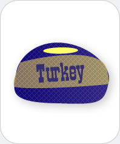

|  |
Turkey
Chemicals you may find: Water Protein Fat Carbohydrates Tryptophan Roasted meat (e.g., derivatives of thiophene, pyrrol, thiazole, pyridine, pyrazine) |
| Meats are muscle tissue of animals and contain approximately 75% water, 20% protein and 5% fat and carbohydrates. The amounts vary with the meat. For example, game contains less fat than farmed animal meat. Upon processing (cooking, frying, roasting etc.) the chemistry of meat changes. Water gets released, the protein structures transform, and the meat becomes tender (denaturated). Other chemical reactions give meats particular tastes, e.g. volatile compounds are formed and give meat aroma and taste. For example, roasting will initiate the Maillard reaction (named after chemist Louis Camille Maillard), where amino acids react with reducing sugars under heat to produce hundreds of volatile compounds (e.g., thiophenes, pyrrols, thiazoles, pyridines and pyrazines) that are responsible for odor and flavor. Turkey meat, like many other meats, milk, and beans, contains tryptophan. Legends have it that the tryptophan in turkey meat makes you sleepy and lethargic after a Thanksgiving or Christmas feast. While tryptophan is a sedative and was used in sleeping aid supplements, it has to be taken on an empty stomach to be effective. Therefore it is more likely, that excessive consumption and the carbohydrate-rich diet are responsible for the after-feast evening slump. | |